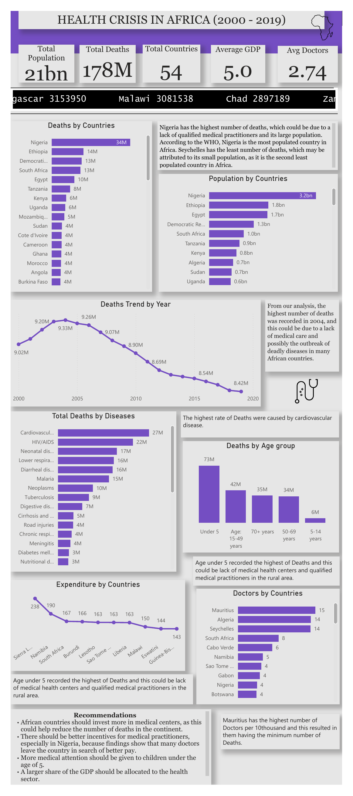

Analytics & BI
Interactive dashboards, KPI systems, reporting automation, diagnostic analysis and decision support designed around real business questions.
Data Analyst · Analytics Educator · Emerging Data Scientist
I help businesses make sense of complex data, build decision-ready analytics, and support professionals who want clearer, stronger career positioning.

I work at the intersection of analytics, education and professional growth. My foundation is data analytics: translating raw information into dashboards, patterns, recommendations and decisions. I am also expanding my work in predictive analytics, Data Science and AI.
As Founder of Amdor Analytics, I have built learning experiences and communities that help people gain practical data skills. That same teaching mindset shapes how I consult: clarify the problem, simplify the evidence, and make the next action obvious.
02 / What I bring
Interactive dashboards, KPI systems, reporting automation, diagnostic analysis and decision support designed around real business questions.
Python-based modeling, data mining and analytical experimentation as part of an evolving Data Science practice grounded in strong analytics fundamentals.
Practical data training, learner support and career guidance built around employability, confidence and hands-on skill development.
03 / Selected work
Five projects showing how I frame data questions across finance, healthcare, people operations and operational performance.
 Live Power BI
Live Power BI
Customer, financial, transaction and card analytics brought into a multi-page banking dashboard to surface client patterns, risk signals and actionable recommendations.
 Dashboard preview
Dashboard preview
A healthcare analytics dashboard designed to make patterns in patient populations, treatment activity, facilities, outcomes and regional trends easier to interrogate and communicate.
 Dashboard preview
Dashboard preview
People analytics focused on attrition patterns across department, job role, gender, age, tenure and other workforce dimensions to support retention-oriented decisions.
 Live Power BI
Live Power BI
Fleet performance and cost analysis combining distance traveled, fuel consumption, maintenance, vehicle-level activity and cost patterns into operational KPIs.
Explore live dashboard ↗
Portfolio archiveA population-health analysis spanning 54 African countries, bringing mortality, population, GDP and medical-resource indicators together to examine geographic and time-based health patterns.
04 / Services
Focused support for organisations that need better data decisions and professionals who need stronger direction or positioning.
Mentorship
One-to-one guidance for professionals who need career clarity, stronger positioning, practical direction and a more intentional next step.
Consultation
Problem framing, analytics direction, dashboard and reporting conversations, and practical data support for decision-makers and growing businesses.
Standalone services
05 / Amdor Analytics
Through Amdor Analytics, I design and deliver data analytics learning experiences, mentor emerging professionals and contribute to a growing community of people developing practical, market-relevant data skills.
Visit Amdor Analytics ↗06 / Experience
Amdor Analytics · Remote, Nigeria
Designing analytics curricula, training and mentoring learners, and growing an accessible data-learning ecosystem.
10Alytics · Canada (Remote)
Delivered data training across industries and contributed to programmes supporting career transitions into analytics.
Binotech Integrated Services Ltd · Nigeria
Built dashboards and KPI systems, analysed customer and sales data, and automated reporting for business decision-making.
07 / Contact
Tell me what you need and I’ll use the context to understand whether the right next step is analytics support, business consultation, mentorship or one of the standalone career services.
chinyerec@amdoranalytics.io ↗